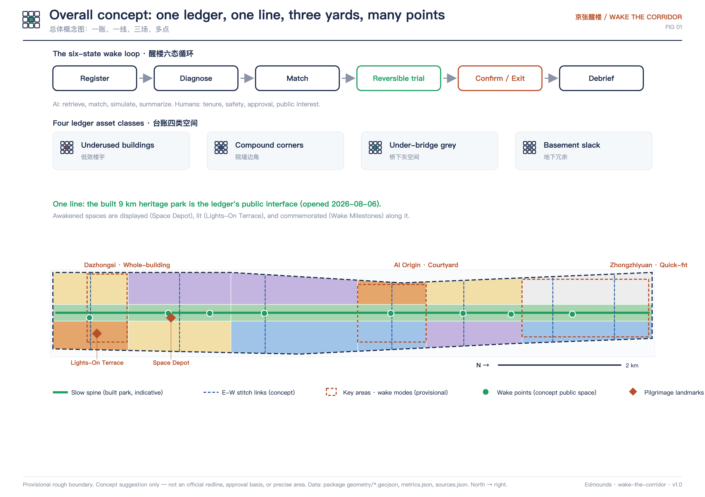
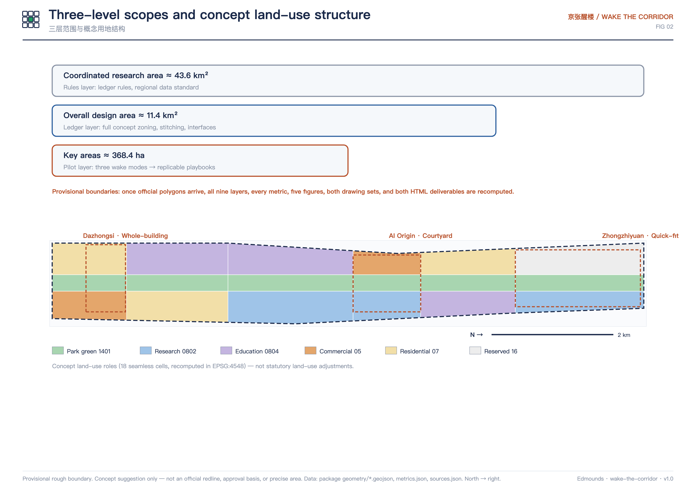
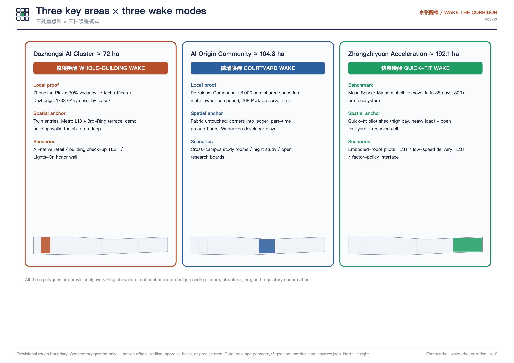
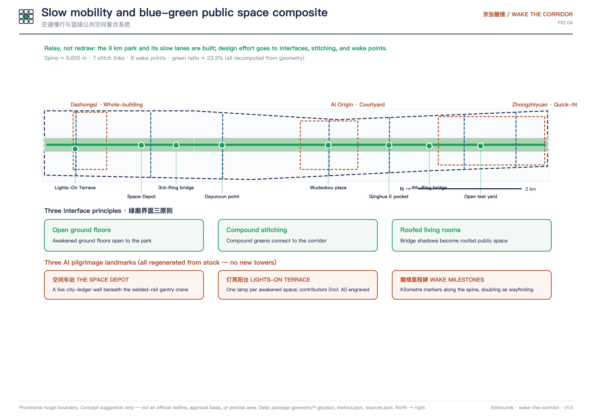
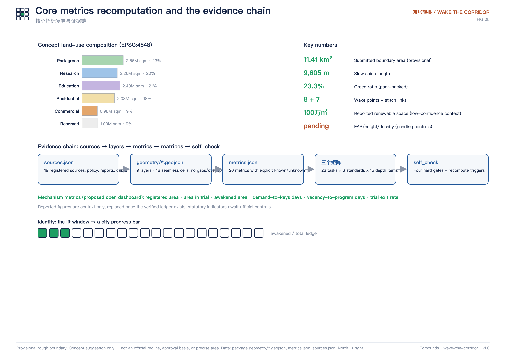

Whole or partial vacant/underused buildings
Overview Map
Rendered directly from the submitted GeoJSON: concept land-use cells, slow mobility (交通慢行: spine and stitch links), blue-green public space (蓝绿公共空间: corridor and wake points), the three key areas (wake modes), and two landmarks.
The Wake Mechanism
Built on instruments already in force: the Beijing Urban Renewal Regulation plus the trial Implementation Measures for underused buildings — whose required base ledger becomes an open, AI-readable, matchable, exit-friendly urban system.
Register→Diagnose→Match→Reversible trial→Confirm / Exit→Debrief
AI: retrieve, match, simulate, summarize. Humans: tenure, safety, approval, public interest. Every state has a human decision point and a pause switch.
Locked corners of compounds and campuses
Shadow sections under viaducts along the park
Redundant basement and plant-floor space
Three-Level Scopes
Rules layer — ledger layer — pilot layer; all polygons provisional.
Rules layer: ledger rules, regional synergy, exportable data standard.
Ledger layer: 18 seamless concept cells, stitching, corridor interfaces.
Pilot layer: three wake modes → replicable playbooks.
Key Areas
Each wake mode has local or benchmark proof, spatial anchors, and risk boundaries.
Dazhongsi ≈ 72 ha · WHOLE-BUILDING WAKE
Whole-building regeneration for AI-native retail and business. Local proof: Zhongkun Plaza, 70% vacancy → tech offices + the open Dazhongsi 1733 district (~15 years, case by case).
Anchors: twin entrances (Metro L13 + 3rd-Ring terrace), the demonstration building, the Lights-On honor wall
AI Origin ≈ 104.3 ha · COURTYARD WAKE
Open regeneration of compound corners and ground floors. Local proof: ~8,000 sqm shared space at the Petroleum Compound; preserve-first 768 Park.
Anchors: corners into ledger, part-time ground floors, the Wudaokou developer plaza
Zhongzhiyuan ≈ 192.1 ha · QUICK-FIT WAKE
Full-stack pilot carrier, benchmarked to Mosu Space's reported 38-day shell-to-move-in retrofit.
Anchors: quick-fit pilot shed (high bay, heavy load), open test yard, reserved cell
AI Scenarios
Twelve scenario cards (four industry test scenarios), sharing one privacy and human-review baseline: minimum data, no biometrics, no individual trajectories, complaint and pause channels.
Owners self-register; AI assists fields and program pre-judgment; human review before entry.
Demand cards in, ranked suggestions out; no lease or administrative effect.
INDUSTRY TEST SCENARIO
Energy/fire/structural pre-screening; licensed on-site appraisal decides.
INDUSTRY TEST SCENARIO
Controlled tests in the quick-fit shed; data on site; informed consent; human safety officer.
INDUSTRY TEST SCENARIO
Time-limited trial on stitch links; never on park lanes; publish routes; one-tap pause.
INDUSTRY TEST SCENARIO
AI ranks risks on sleeping assets; enforcement stays human; no facial recognition.
Park AI guide tells each space's past and present; fact-checked, provenance disclosed.
Slow and barrier-free wayfinding on aggregated flows only.
Awakened ground floors host night study; staffed at all times.
Registered/trialing/awakened areas and waiting days published live.
48-hour reuse proposals on de-identified ledger data each Wake Week.
AI-assisted plus staffed counters in parallel; human guidance retained.
Pilgrimage Landmarks & Culture
All regenerated from stock, no new towers; keynote "rust and signal".
THE SPACE DEPOT
A live city-ledger wall beneath the welded-rail gantry crane — the pilgrimage object is the mechanism itself.
LIGHTS-ON TERRACE
One lamp per awakened space; contributors — AI agents included — engraved by name.
WAKE MILESTONES
Railway-style kilometre markers along the spine, doubling as wayfinding, recording each wake day.
Culture narrative: Zhan Tianyou opened a railway through existing terrain; Zhongguancun grew from one street — Haidian innovates inside existing fabric. The new AI culture treats urban space as an open-source repository: idle space is an unmerged proposal; waking it is the merge.
Renewal Projects, Phasing & Long-Term Operation
Eleven near-term renewal projects (更新项目: ledger platform, demonstration building, Lights-On Terrace, Space Depot, shared ground floor, developer plaza, format prototype, pilot shed, test yard, wake-point system, wake station); three phases fully cover the boundary; concept suggestions, not commitments.
| Phase | Content | Area (recomputed) |
|---|---|---|
| Phase 1 · 0-2y | Three pilot yards: open-source the ledger, one reversible pilot per mode, light the first lamp | 2,170,042 ㎡ |
| Phase 2 · 2-4y | Corridor wake points: interfaces and eight micro points activated, marathon routinized | 2,655,732 ㎡ |
| Phase 3 · 4-8y | Institutionalized rollout: ledger folded into annual renewal plans; standard exported | 6,587,078 ㎡ |
Annual anchor "Wake Week": open ledger report + 48-hour matching marathon + open-house week + lamp ceremony. The developer community runs on the open-ledger repository, with issues and PRs open to agents worldwide.
Proposal Figures
Five core figures derived from GeoJSON, metrics, and matrices (embedded locally).





Task Coverage
The compliance matrix covers announcement items 1.3/1.4/1.5 and agent.1-6; the standard matrix covers six mandatory standards; the depth matrix covers fifteen items.
Sources & Evidence
19 registered sources: the announcement and taskbook, municipal renewal policies, Zhongguancun AI measures, reports on the park completion and Zhongkun Plaza, and seven mechanism cases — each with publisher, URL, retrieval date, and use limits. This page loads no CDN, remote fonts, external scripts, or iframes.
sources.json · compliance_matrix.json · standard_matrix.json · design_depth_matrix.json
Assumptions & Recompute Triggers
Provisional boundary, no public ledger yet, mechanism-only cases, prototypes not existing buildings, indicative park band, AI role limits — seven assumptions each registered with recompute triggers.
assumptions.json · self_check.json · metrics.json
This proposal is an open co-creation suggestion; it does not replace statutory planning or constitute government-approved conclusions. All spatial suggestions are concepts, references, or material for professional deepening.